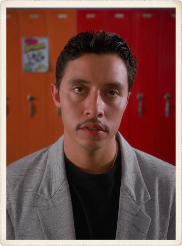

Pedro
Pedro Sánchez je Napoleonův kamarád, vlastník horského kola. Je to klidný, nenápadný ale vytrvalý mladík s mexickými kořeny a velkou rodinou. Jeho teta Concha na vlastní oči viděla El Santo Nińo de Atocha. Vynikající cukrář a také školní prezident, za něhož se vaše nejdivočejší sny stávají skutečností.